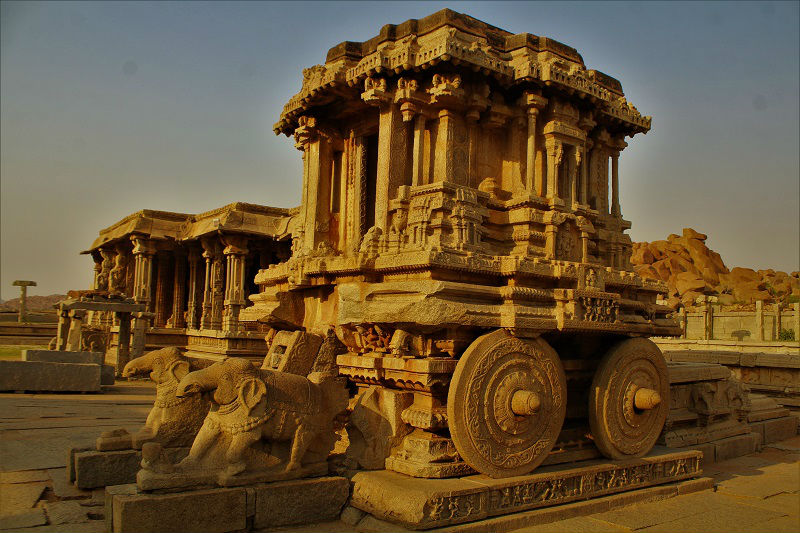

Iconic Stone Chariot, Hampi,Hospet,Karnataka
Stone Chariot is an iconic monument located in front of Vijaya Vittala Temple in Hampi, central Karnataka. Hampi is a UNESCO World Heritage Site.
Stone Chariot is a shrine dedicated to Garuda, the official vehicle of Lord Vishnu. Stone Chariot in Hampi is one of the three most popular stone chariots in India. Other two are in Konark (Odisha) and Mahabalipuram (Tamil Nadu).
History: Stone Chariot was built in the 16th century by the orders of King Krishnadevaraya of Vijayanagara Empire.
The emperor is said to have been impressed by the Sun temple of Konark during the war with Kalinga and wanted to recreate a similar one in Hampi.
Recently released INR 50 currency notes of India have stone chariot images.

Design: Built in Dravidian style,
chariot has carvings depicting mythical battle scenes. Standing on two giant wheels, two elephants are seen pulling the chariot. Stone Chariot is made of multiple smaller stones assembled to perfection. Stone Chariot was partially damaged by invading army towards the end of Vijayanagara Empire.
History: Stone Chariot was built in the 16th century by the orders of King Krishnadevaraya of Vijayanagara Empire. The emperor is said to have been impressed by the Sun temple of Konark during the war with Kalinga and wanted to recreate a similar one in Hampi.
Recently released INR 50 currency notes of India have stone chariot images.
Design: Built in Dravidian style,
chariot has carvings depicting mythical battle scenes. Standing on two giant wheels, two elephants are seen pulling the chariot. Stone Chariot is made of multiple smaller stones assembled to perfection. Stone Chariot was partially damaged by invading army towards the end of Vijayanagara Empire.
Timing: Vijaya Vittala Temple complex is open between 8.30 AM and 5 PM on all days.
Hampi is 350 kms from Bengaluru and can be reached via road, rail or air.
Design: Built in Dravidian style,
chariot has carvings depicting mythical battle scenes. Standing on two giant wheels, two elephants are seen pulling the chariot. Stone Chariot is made of multiple smaller stones assembled to perfection. Stone Chariot was partially damaged by invading army towards the end of Vijayanagara Empire.
History: Stone Chariot was built in the 16th century by the orders of King Krishnadevaraya of Vijayanagara Empire. The emperor is said to have been impressed by the Sun temple of Konark during the war with Kalinga and wanted to recreate a similar one in Hampi.
Recently released INR 50 currency notes of India have stone chariot images.